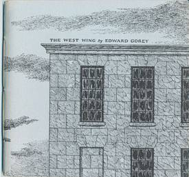

Saturday, November the 20th, 2004
back to: title, date or indexes
I had an interesting conversation the other day, with the person sitting next to me on a bus as it crawled through east London. We talked of a number of things, as you do, and then became embroiled in a discussion about The West Wing. Our animated discussion of this topic lasted for about ten minutes, until I had to get off the bus, at which point my interlocutor and I realised we had been talking at cross-purposes. He had been talking about the television Potus-drama, whereas I had in mind Edward Gorey's book of the same name. It just goes to show that fascinating conversations can be had even if neither participant has the faintest idea what the other is babbling on about.

Two different wings, both westerly